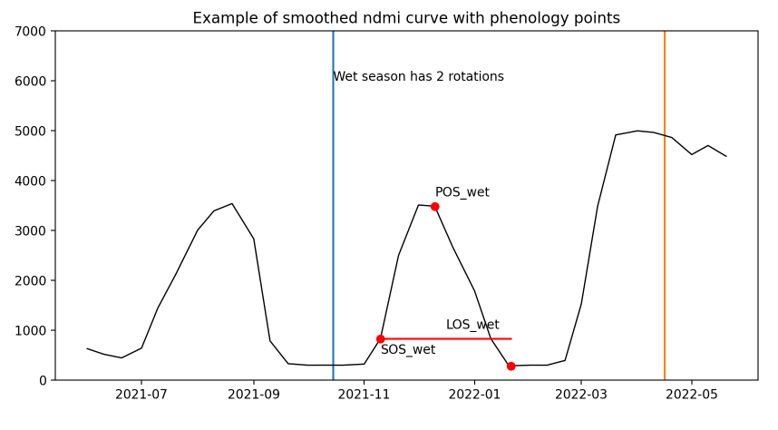

classification overview¶
================================================================================================================================
Modelling choices and naming overview:¶
Medels are named with the following components in order, separated by _:
schematic_model
training years if single year: last 2 digits of year. if multi-year: last 2 digits of first year, followed by last 2 digits of last year
for example:
base4Poly6_bal200mix4_21_LC25_RFfor RF model with 25 classes trained on single year data (2021)base4Poly6_bal200mix4_1724_LC8_RFfor RF model with 8 classes trained on multi-year data year (2017-2024)
When an image is classified, the model name is proceeded by a regional identifier and followed by the classification year for example:
004080_base4Poly6_bal200mix4_21_LC25_RF_2021for a 2021 map of cell 004080 using the first model example aboveCELPyTile8_base4Poly6_bal200mix4_21_LC25_RF_2021for a 2021 map of all cells in Paraguay Tile 8 using the first model example above
Feature model (variable inputs to use in the model)¶
Three types of features can be used in the model:
spectral-index stats (
si_vars): Summary statistics for the modelling year generated from smoothed time-series data for each selected spectral imagephenological variables (
pheno_vars)* Seasonal phenological variables calculated from the smoothed time-series curves for the selected subset of spectral indices (spec_indices_pheno)singleton variables (
singleton_vars): Ancillary raster datasets covering the full AOI for a single point in time (can be constant or annual, but do not provide time-series data within a given year.)segmentation variables (
poly_vars): Outputs from segmentation model (or other object-extraction method), which, unlike singleton_vars, are already parsed by cell, but like singleton_vars, do not have a time-series element.
Choose a unique feature_model name for the desired combination of features
Feature models are stored in the dictionary (feat_mod_dict) at “/home/downspout-cel/paraguay_lc/Feature_Models.json”.
This allows quick lookup by name of the feature set (spec_indices, si_vars, singleton_vars, and poly_vars) and the full band sequence of the resulting stack (in case the internal band names get stripped).
spectral-index variables¶
Spectral-index stats and phenological variables contain an index component, a statistic component, and a seasonal component. For the index component, see vegetation indices for options. The default RF model uses four indices that we generated smoothed time series for in the pipeline process (gcvi, kndvi, nbr & ndmi). Indices can be readily dropped from new models, but adding new indices will require running the ts pipeline step to generate time series data for the index for all cells involved.
The statistic component regards how the time-series data for a spectral index are to be summarized into a single value, for example from summary statistics or phenological variables for the modelling year. The default RF model uses (Max,Min,Amp,Avg,CV,Std,Jan,Feb,Mar,Apr,May,Jun,Jul,Aug,Sep,Oct,Nov,Dec) but variables can readily be dropped or added for new models.
Note that the year is defined by the parameters start_yr and start_mo, such that it starts on the first of start_mo of start_yr (so a year can be 1/Jan-31/Dec, 1/Apr-31/Mar, 1/Jun-31/May, etc. to best align with the local crop calendar and avoid splitting the primary cropping cycle)
wet season and dry season are currently hard-coded as wet = 1/Nov-1/Apr and dry = 1/May-1/Oct for Paraguay.
Seasonal dates can be changed and new variables can be added within ts_composite.py of LUCinSA_helpers.
Note
The final data stack is of type uint16. Any variable added needs to be of the same type or smaller. This means that it needs to contain only non-negaive integers with a max value of 65535.
Variable options:
maxv_yr / maxv_wet / maxv_dry = Maximum Value for year / wet season / dry season
maxd_yr / maxd_wet / maxd_dry = Day of year of maximum value (informational only. Use Maxdc as variable)
maxdc_yr / maxdc_wet / maxdc_dry = 100 * (Cosine + 1) of MaxDate(*2pi/360) (so that calendar is cyclical and 31 Jan is as close to 1 Dec as it is to 30 Jan)
minv_yr / minv_wet / minv_dry = Minimum Value for year
mind_yr / mind_wet / mind_dry = Day of year of minimum value. (informational only. Use Mindc as variable)
mindc_yr / mindc_wet / mindc_dry = 100 * (Cosine + 1) of MinDate(*2pi/360) (so that calendar is cyclical and 31 Jan is as close to 1 Dec as it is to 30 Jan)
amp_yr / amp_wet / amp_dry = Amplitude across year / wet season / dry season = (Max-Min)
avg_yr / avg_wet / avg_dry = Mean Value for year / wet season / dry season
sd_yr / sd_wet / sd_dry = Standard Deviation for year / wet season / dry season
cv_yr / cv_wet / cv_dry = Coefficient of Variation = (1000 * sd/avg) for yr / wet season / dry season
Jan_20 = Value for smoothed time series on 20 Jan
Feb_20 = Value for smoothed time series on 20 Feb
… etc.
Dec_20 = Value for smoothed time series on 20 Dec
phenological variables¶
numrot_wet / numrot_dry = number of planting rotations within the season (number of peaks above a threshold with valleys below a threshold between)
posd_wet / posd_dry = day of peak of season. If more than one planting cycle occurs within the season, this is the peak of the first cycle (and thus not necessarily == maxd). See images below.
posv_wet / posv_dry = value at peak of season. If more than one planting cycle occurs within the season, this is the value at the peak of the first cycle (and thus not necessarily == maxv)
sosd_wet / sosd_dry = day of Start of Season, defined as the observation below a threshold index value (by default 1000) closest, but to the left of, the pos point
sosv_wet / sosv_dry = value at Start of Season
eosd_wet / eosd_dry day of End of Season, day of Start of Season, defined as the observation below a threshold index value (by default 1000) closest, but to the right of, the pos point
eosv_wet / eosv_dry = value at End of season
los_wet / los_dry Length of Season, defined as the number of days between the Start and End of Season (eos-sos)
rog_wet / rog_dry Rate of Greenup = (maxv - sosv) / (maxd - sosd)
ros_wet / ros_dry = Rate of Senescing = (maxv - eosv) / (eosd - maxd)
SOS = (sosd, sosv) EOS = (eosd, eosv), POS = (posd, posv)
| (**problem with using max seasonal value as peak of season when season can contain multiple cropping cycles:| | |:——————————————————: | :——————————————————: | | |  |
singleton variables¶
Singleton variables are ancillary raster datasets covering the whole area and time period. The only singleton variable currently available is forest_strata, which provides vegetational ecozones (“estratos_corregidos2014_6” – TODO: get citation info from Ata).
A dictionary for singleton variables exists at: “/home/downspout-cel/paraguay_lc/singleton_var_dict.json” This contains the name of the variable, path to the dataset, and name of the attribute to use. To add another singleton variable, simply add the dataset at the desired location in the shared folder and add the data (manually) to the dictionary.
segmentation variables¶
Segmentation variables are outputs and summary variables from the segmentation process (TODO: link to segmentation processing description). Current variables are:
poly_dist = Distance from edge of field (inner only)
poly_ext = Likelihood of pixel belonging to a crop field (10,000 = very likely. Anything less = less sure)
poly_cropbnds = Likelihood of pixel being on the boundary of a crop field
poly_area^f = Area of field
pred_APR^f = Area to perimeter ratio
pred_APrEf^f = Efficeincy of area-to-perimiter ratio (the closer to 100, the more the polygon looks like a square. Large numbers suggest that the polygon represents multiple fields that were not fully divided in the segmentation processing.)
NovDecStd^f = Standard deviation of GCVI index for whole field for Nov and Dec (averaged across dates) ^f: these are field-level values – all points within a field are assigned the same value
Sample model (sample points to use in training)¶
class balance
minimum cutoff
mixed-class augmentation
percent test/train
poly-based augmentation
Schematic model:¶
The classification system used during model building – note that more detailed classes can always be regrouped to show less detail following model-building/classification, but not vice-versa.
Current schematic models are:
max = LC32: uses all possible classes with training data
all = LC25: uses all classes with reasonable size/accuracy in traiing data (some minor crops from LC32 are regrouped)
crop_nocrop = LC2: a two-class model for crop/nocrop
crop_nocrop_medcrop = LC3: a three class model for crop/nocrop/medcrop
crop_nocrop_mixcrop = LC3sm: alternative three class model for crop/nocrop/mixedcrop
crop_nocrop_medcrop_tree = LC4: a four class model for crop/nocrop/medcrop/tree
veg = LC5: a five class model for vegetation type (noveg/lowveg/medveg/highveg/mature)
veg_with_crop = LC8:
veg_with_cropType = LC10
cropType = LC_crops: a model with specific crop classes and nocrop ‘* single_X: a binary map using any class in LUT as X
class models can be added by adding a column to the LUT and a correspoinding line to the get_class_col function in rf.py. All unique ids (LC_UNQ column) must have a corresponding value in the class column. If a category should be excluded from training (e.g. because it is not specific enough), assigning a value of 99 will cause points from that category to be dropped from the dataframe prior to modelling.
Model architecture:¶
multi-year random forest
single year gradient boost
…